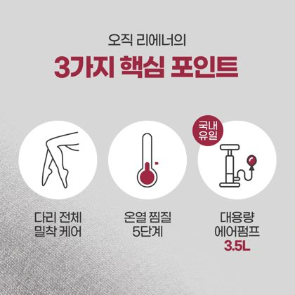
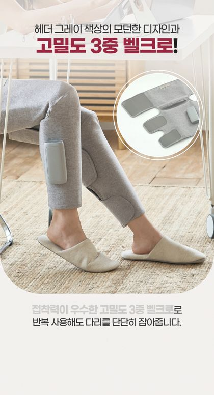

좋은 상세페이지 공식
잘 팔리는 상세페이지 22개(벤치마크 18 + 바리바디 4)·이미지 1,033장을 대5·중11·소55 3단 분류로 전수 분류해 도출한 "먹히는 구성 공식".
특정 제작사의 것이 아니라, 시장에서 검증되어 모두가 수렴한 공통 문법입니다. · 정리 2026-06-04
1. 이 문서를 읽는 법 / 방법론
네이버 브랜드스토어·스마트스토어·자사몰에서 잘 만든 상세페이지 22개를 수집해, 페이지를 구성하는 모든 이미지(총 1,033장)를 위→아래 순서대로 대5·중11·소55 3단 분류 체계로 라벨링했습니다. 그 결과 "어떤 요소가 항상 들어가는가(필수)", "어떤 순서로 배치되는가(흐름)", "카테고리/제품 성격에 따라 무엇이 달라지는가(변주)"를 정량적으로 도출했습니다.
대5·중11·소55 3단 분류 (이 문서의 공통 언어)
※ 위 11개는 중분류이며, 이들은 다시 대분류 5(쇼핑혜택·안내 / 눈길끌기&공감 / 핵심차별점 / 제품력증명 / 구매유도)로 묶이고, 아래로는 소분류 55로 세분화됩니다. 각 요소의 정의·역할·작성법은 4장 사전에서 상세히 다룹니다.
2. 3가지 대원칙
원칙 1 — 본체는 언제나 "기능/구조"다
18개 벤치마크에서 기능/구조 설명이 페이지의 평균 33.4%, 전 제품 예외 없이(18/18) 가장 큰 비중을 차지했습니다. 마사지기는 13~30장, 진공쌀통 28장, 더티린넨 23장, 한일 전기모기채는 17장(POINT 01~07). "어떻게 작동하는가 / 무엇으로 만들었는가 / 어떤 모드가 있는가"를 충분히 보여주지 않으면 상세페이지가 아니다가 첫 번째 법칙입니다.
원칙 2 — 신뢰는 "구매 결정의 마지막 빗장"을 푼다
신뢰(인증/AS/실적/전문가/후기)는 평균 13.6%로 기능 다음 2위이며, 전 제품(18/18) 빠짐없이 등장했습니다. 객단가가 높거나(요소수·세탁조), 몸에 닿거나(마사지기·탈취제), 의료성이 강할수록 신뢰 비중이 폭증합니다(더티린넨 28장, 넥가드닥터 목견인기는 20장 중 7장이 신뢰 — 공식총판·배상보험·기부 CSR·백지영 유튜브 히스토리). "좋아 보이는데 믿어도 되나?"에 답하지 못하면 장바구니에서 멈춘다.
원칙 3 — "공감 → 욕망 → 확신 → 안심"의 감정 곡선을 탄다
좋은 상세페이지는 정보의 나열이 아니라 감정의 설계입니다. 상단에서 문제제기로 "내 얘기네" 공감을 만들고, USP로 "그래서 이게 답"이라는 욕망을 키우고, 기능·효과·신뢰로 "진짜네" 확신을 주고, 가이드·구매정보로 "사도 되겠다" 안심을 줍니다.
3. 골든 플로우 — 위에서 아래로의 7단 구조
분류한 1,033장을 위치순으로 보면, 잘 만든 페이지는 거의 예외 없이 아래 7단계 흐름을 따릅니다. (각 단계에서 쓰는 요소를 색칩으로 표기)
고지·혜택 배너 — 첫인상 전 "운영 신호"
후킹 · 제품 인트로 — 스크롤을 멈추는 첫 카피/비주얼
문제제기 · 타겟 공감 — "내 얘기네"
핵심가치(USP) — "그래서 이게 답"
기능 · 구조 (본문) — 페이지의 심장, 가장 길다
효과 증명 · 신뢰 — "진짜네"
사용가이드 · 구매정보 — "사도 되겠다"
4. 중분류 11 구성요소 사전
각 요소: 정의 · 역할 · 권장 위치 · 벤치마크 평균 비중 · 작성 팁 · 실제 예시. (효과는 증명형/연출형 두 갈래로 분리 — ⑥-A·⑥-B)
① 매장공통 / 고지 평균 8.5% · 17/18
정의·역할: 상품 본질과 무관한 매장 운영 정보. 쿠폰·적립, 배송(오늘출발), 리뷰 이벤트, 공지, 그리고 함께 파는 상품(크로스셀).
위치: 최상단(스크롤 시작 전). 팁: 저가·저관여 상품은 두껍게(특가·1+1·크로스셀 도배), 프리미엄·자사몰은 1~3장으로 절제. 너무 많으면 "할인에만 의존하는 브랜드"로 보임.

② 후킹 / 인트로 평균 6.0% · 17/18
정의·역할: 스크롤을 멈추게 하고 "이거 뭐지?" 기대를 만드는 첫인상. 정보 전달이 아니라 주목·욕망 점화. 메인 슬로건, 키비주얼, 모델/셀럽컷, 브랜드 무드.
위치: 고지 배너 직후 도입부. 팁: "제품명 + 형용사"가 아니라 고객이 얻을 상태를 한 문장으로. 짧고 강하게.

③ 문제제기 / 타겟 평균 5.3% · 14/18
정의·역할: 고객이 겪는 불편·결핍을 먼저 꺼내 "내 얘기네" 공감을 만든다. 기존 대안(디퓨저·폼롤러·세제)의 한계를 짚어 우리 제품의 필요성을 세운다. "이런 분께" 체크리스트로 타겟을 호명.
위치: 후킹 직후. 팁: 구체적 상황일수록 강하다("냄새 때문에 이별 통보"). 강하게 가면 브랜드 서사로 확장(더티린넨 18장).

④ 핵심가치 / USP 평균 6.1% · 16/18
정의·역할: "그래서 뭐가 다른가"를 한 방에 박는 차별 메시지. 한 줄 카피 + N가지 핵심 포인트 요약. 경쟁 대안 대비 우위, 가성비, 브랜드 포지셔닝.
위치: 문제제기와 기능 본문 사이의 "전환점". 팁: 기능 나열로 바로 들어가지 말고, 한 문장으로 정의한 뒤 본문으로. USP가 없으면 "기능은 많은데 왜 사야 하는지 모르는" 페이지가 된다.

⑤ 기능 / 구조 평균 33.4% · 18/18 · 본체
정의·역할: 작동 원리, 모드/강도, 소재/구조, 핵심 기술, 신·구 비교, 적용 부위/시나리오. 페이지에서 가장 길고 가장 중요하다.
위치: 본문 전체. 팁: ① POINT/Check 01~08 넘버링으로 묶으면 가독성·신뢰가 올라간다(업계 공통 문법). ② 글보다 GIF·단면도·실험 데모로 "보여주기". ③ 모드·강도·온열 단계는 표/아이콘으로 일목요연하게.

⑥-A 효과 — 증명형 평균 3.4% · 9/18
정의·역할: 효과를 데이터로 증명한다. before/after, 수치·임상, 실험 결과. "진짜 효과가 있다"를 눈에 보이는 근거로 못 박는다.
위치: 기능 본문에 섞이거나 직후. 팁: 미용·바디·의료성 제품은 증명형(데이터)이 결정적(리칼지메디 16장). 증명형이 없으면 "예쁜데 효과는 모르겠는" 페이지가 된다.

⑥-B 효과 — 연출형 평균 5.2% · 16/18
정의·역할: 모델이 실제 쓰는 라이프스타일·상황컷. 상황 이입·스케일감·"이렇게 편하다"를 보여준다. 증명보다 분위기·맥락 전달이 목적.
위치: 기능 본문에 섞이거나 직후. 팁: 도구·생활용품은 연출컷이 활약한다. 다만 연출컷만 많고 증명이 없으면 설득력이 약하니 증명형과 함께 쓴다.
⑦ 디자인 평균 3.0% · 11/18 · 선택
정의·역할: 컬러·외관·인테리어 어울림을 별도 소구. 필수는 아니지만, "보이는 곳에 두는" 제품(체중계·종아리마사지기·쌀통)이나 디자인이 구매 이유인 카테고리에서 차별점이 된다.
팁: 매일 눈에 보이는 제품·선물용이면 "매일 쓰니까 보기 좋게"를 한 컷 넣어라.

⑧ 신뢰 (인증/AS/실적) 평균 13.6% · 18/18 · 2순위
정의·역할: 구매의 마지막 불안을 푼다. 시험성적서·특허·KC인증, 수상·판매량·검색 1위, 전문가 검증, 실사용 후기·외부몰 평점, 공식판매처/정품, A/S·환불 보증.
위치: 본문 곳곳 + 하단. 팁: 의료·식품·고가일수록 두껍게. 구체적 숫자·기관명·문서 이미지가 핵심("KC인증" 글자보다 인증서 사진).

⑨ 사용가이드 평균 5.3% · 16/18
정의·역할: 사용법 STEP, 조작·충전·세척법, 부위별 활용 가이드, 사용 팁/테크닉. "쉽게 쓸 수 있다"는 안심과 "이렇게 활용하면 더 좋다"는 활용도 확장.
팁: 손이 가는 동작은 STEP 1·2·3 + 손 사진으로. 마사지기는 부위별/테크닉별 가이드가 활용도(=만족도)를 높인다.

⑩ 구매정보 / 스펙 평균 10.1% · 17/18
정의·역할: 제품 상세 사양표, 구성품, FAQ, 주의사항, 제품 고시정보, 배송/교환·반품. 신뢰의 "디테일" 버전이자 법적 고지.
팁: FAQ는 실제 구매 직전 의심(아프지 않나? 얼마나 써야 하나? 효과 안 보이는데?)을 미리 해소. 스펙표·고시정보는 빠짐없이.

5. 2대 포맷 계열 — 스펙과시형 vs 스토리증명형
잘 만든 페이지는 크게 두 골격으로 수렴합니다. 어느 게 옳다기보다 제품 성격에 맞춰 고른다.
스펙 과시형
기능·기술이 곧 경쟁력인 제품 (전자제품·마사지기·도구)
골격- 고지·혜택 배너
- 후킹(모델/셀럽) + "왜 1위인지"
- 라인업/선택 가이드
- POINT/Check 01~08 기능 연속
- 소재·구조·신구 비교 (6061 알루미늄, RPM, 원형회전…)
- 3가지 사이즈/옵션 · BPA-free 안전
- 구성품·증정·A/S·FAQ
스토리·증명형
효능·안전을 "믿게" 만들어야 하는 제품 (소비재·생활화학·식품)
골격- 압도적 1위·수상·판매량
- 긴 브랜드 스토리(개발 동기·공감 서사)
- 문제제기 + 기존 대안의 한계 + 원리
- 성분·메커니즘 (EM·산소·SCR…)
- "이유 01·02·03" 차별 / "POINT 01~04"
- 인증·특허·시험성적서 폭격
- 사용법·FAQ·고시

6. 카테고리별 권장 레시피
| 카테고리 | 주력 무게중심 | 꼭 챙길 요소 | 흔한 실수 |
|---|---|---|---|
| 마사지기 | 기능(모드·원리) + 신뢰(전문가·인증) | POINT 넘버링, 부위별 가이드, 전문가 검증, before/after | 기능 나열만 하고 USP·문제제기 생략 |
| 생활용품(소비재) | 문제제기·스토리 + 인증/특허 | 공감 서사, 성분·원리, 시험성적서, 사용처 | "향/효과"를 마스킹으로만 주장(증명 부족) |
| 가전/IoT | 기능 + 앱 경험 + 디자인 | 앱 화면·연동, 정확도(BIA 등), 디자인 한 컷 | 하드웨어만 설명, 앱·UX 누락 |
| 도구/생활(카트 등) | 기능 시연(GIF) + 활용 시나리오 | 접힘·적재 GIF, 다용도 활용, 크로스셀 | 증명 없이 스펙만 — 시연 영상/GIF 필수 |
| 식품/화학 | 신뢰 폭격 + 실험 데모 | 시험성적서, 무첨가, 전후 실험, 고시정보 | 법적 고시·안전 정보 소홀 |
7. 데이터 근거 — 벤치마크 18개 평균
"잘 만든 페이지는 각 중분류 요소를 페이지의 몇 %나 쓰는가"와 "몇 개 제품이 채택했는가". 비중이 큰 순. (중분류 11개 기준 · 효과는 증명형/연출형으로 분리)
| 요소 | 평균 비중 | 비중 막대 | 채택률 |
|---|---|---|---|
| 기능/구조 | 33.4% | 18/18 | |
| 신뢰(인증/AS) | 13.6% | 18/18 | |
| 구매정보/스펙 | 10.1% | 17/18 | |
| 매장공통/고지 | 8.5% | 17/18 | |
| 핵심가치/USP | 6.1% | 16/18 | |
| 후킹/인트로 | 6.0% | 17/18 | |
| 사용가이드 | 5.3% | 16/18 | |
| 문제제기/타겟 | 5.3% | 14/18 | |
| 효과-연출형 | 5.2% | 16/18 | |
| 효과-증명형 | 3.4% | 9/18 | |
| 디자인 | 3.0% | 11/18 |
읽는 법 — 채택률 18/18(기능·신뢰)은 "넣지 않으면 어색한" 필수이고, 구매정보·매장공통·후킹도 17/18로 사실상 필수. 디자인 11/18·효과-증명형 9/18은 제품에 따라 선택. 후킹·문제·USP는 비중은 작아도(5~6% 안팎) 14~17/18로 "감정 곡선의 방아쇠"라 대부분 챙긴다. 효과는 연출형(5.2%·16/18)이 더 흔하고, 증명형(3.4%·9/18)은 미용·바디·의료성 제품에서 결정적이다.
8. 발행 전 체크리스트
- ☐ 기능/구조가 전체의 1/3 이상인가? 원리·모드·소재를 GIF/단면/실험으로 보여줬나?
- ☐ 한 줄 USP가 있나? "그래서 뭐가 다른가"에 카피 하나로 답하나?
- ☐ 상단에서 문제제기/타겟 호명으로 공감을 만들었나?("이런 분께")
- ☐ 후킹 카피가 "제품명+형용사"가 아니라 고객이 얻을 상태인가?
- ☐ 신뢰 — 인증서/특허/수상/후기/전문가/AS를 구체적 숫자·문서 이미지로 넣었나?
- ☐ 효과 증명이 연출컷에만 의존하지 않나? (before/after·수치·실험 1개 이상)
- ☐ 사용법 STEP·FAQ·주의사항·고시정보·배송/교환 정보가 하단에 있나?
- ☐ 본문이 길다면 문제→기능을 교차 반복해 지루함을 막았나?
- ☐ (해당 시) 보이는 곳에 두는 제품이면 디자인 한 컷을 넣었나?
- ☐ 저가/저관여면 상단 혜택을, 프리미엄이면 절제를 — 매장공통 두께가 제품 톤과 맞나?